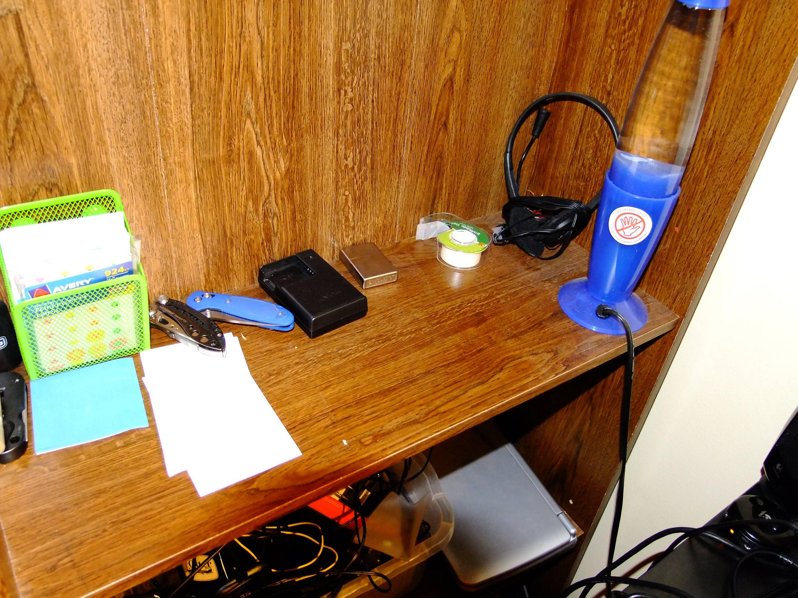
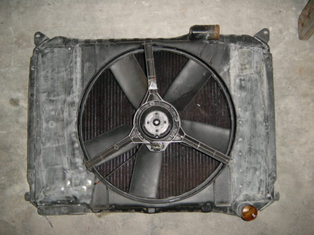
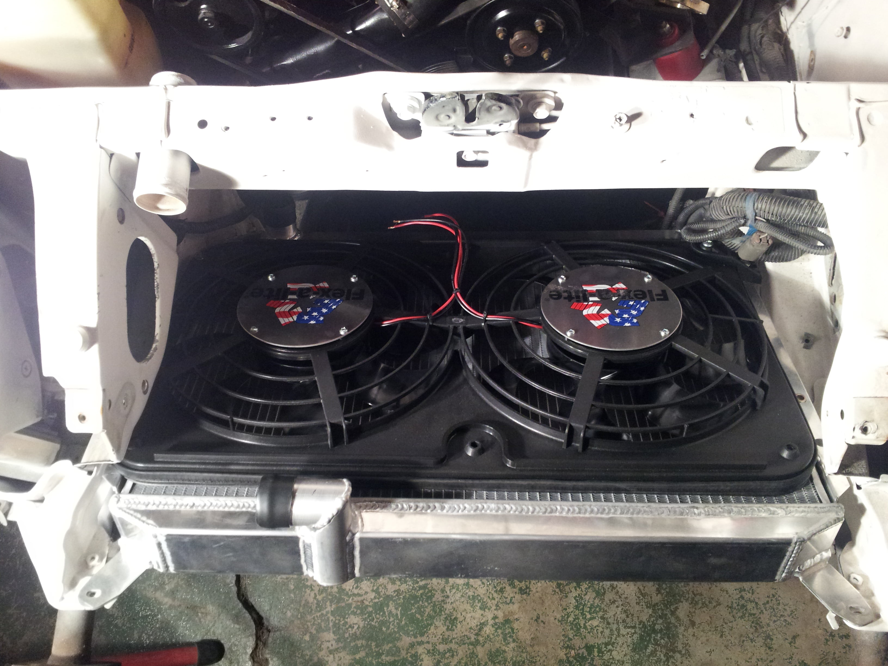

-
Nice find.
I got rid of my flexalite fans and went with a tarus fan. But on my NA the car wouldn't idle due ti the forced air into my intake. So I went with a Concorde fan. Great fit.My Build Thread -
Please followup with this fan mod when you get it workingZ_Karma;348300 wrote: Resurrected this thread for this:
1999 Mercury Cougar E-fan. Close to perfect fit between the end tanks, would only requires some simple L brackets to mount to stock locations.
This one has a chip missing on the bottom where i dropped it. I haven't tested it yet.
1988 300ZX Turbo, Shiro Special #760
1988 300ZX Turbo Automatic (wife's car)
1991 Hard-body 2WD
http://zccw.org/zccw/?page_id=1215 -
I've got a whole story on Efans.
I ran a maxima fan for a couple years on a stock radiator. Fit great, just couldn't keep up when it broke 90 degrees outside in 5 O'clock traffic. Never overheated, just broke the 175 mark when HI is set to come on at 160. This being measured with the sender in the lower radiator hose or output side.
So this summer I upgraded to the MSA 3 core radiator. Problem is that now the maxi fan wouldn't clear the frame horn and required some serious butchering which eventually broke one the blades and severely weakened the shroud which eventually died.
Time to upgrade. I ended up with a pair of fans off a 98 Vette. These required a custom aluminum shroud approximately 1/2" deep to mount them and an additional set of relays to make them work with HI and Low like a stock Vette.
So far this combination works like a champ. I drive an hour to work, maybe longer depending on traffic. Last night on the way home it was 65 degrees out and again the only time it got warm, 140+ degrees, was in rush hour traffic. Once I got out of town the temps dropped to the point the sender wouldn't pick register within 20 miles on the highway.
Definitely not the cheapest way to go, but so far the most effective I've found.Life's short
Go fast
Have a blast
Leave a good looking corpse -
The Flex-a-Lite 410 has worked like a champ for me so far. Dual 12" with its own controller. When it got to 38°C (100°F) this summer it was having trouble keeping up, but I discovered the space between the A/C condenser and radiator had filled up with those floaty pollen things (my garage was full of them last year and I guess the fan sucked em up while Zoey was idling.) Once I got that crap cleared out (seriously, in the area covered by the fan blades the stuff was so thick it actually came out in a big sheet like fibreglass insulation or something. Anyhoo, once I got that cleaned out I went out of my way to find the hottest environment to run Zoey with the A/C on full blast to see if the fans could keep up. I idled her in a buddy's garage with the sun beating down on the roof, it was 43°C (109.4°F) according to the ambient temp sensor, and I couldn't get the water temperature to go more than one notch above normal on the digital display. It seems dumb, but the first thing to check when you're having overheating problems is to make sure there isn't anything physically blocking the passage of air through the radiator. Durr, right?
If you're looking for an aftermarket complete package e-fan setup with a shroud that fits the Z31 radiator almost perfectly and you don't mind spending a few bucks, I feel this kit is pretty hard to beat.Zoey - 1987 Z31T GLL - HKS EVC / CM SS 3" turbo-back / Stance GR+
Black Betty - 2014 Audi C7 S6 APR1 -
I like it. Any idea what they flow? I'm rocking the good old taurus fan on high and the car still runs warm after a bit of drifting. I'll be going to the 3-row aluminum radiator before next season, but I'd look into other fan possibilities too.Z_Karma;348300 wrote: Resurrected this thread for this:
1999 Mercury Cougar E-fan. Close to perfect fit between the end tanks, would only requires some simple L brackets to mount to stock locations.
This one has a chip missing on the bottom where i dropped it. I haven't tested it yet.- VG30DET (HE341) 86 300ZX - 1982 280ZX Turbo - Headered NA 1986 300ZX 2+2 - 2000 Xterra - -
I've not tested it, it's probably going into SS#820 but it will be awhile before that's running.
I'm going to power it up with a battery and measure the current draw. I can borrow a anemometer
from work to sample the air flow and compare that to the shrouded GM 3800 fan i have in my 84T.
The 3800 fan has worked great for ~9 years of almost daily driving.


84 AE/Shiro #683/Shiro #820/84 Turbo -
What GM car is this out of?Z_Karma;348484 wrote: I've not tested it, it's probably going into SS#820 but it will be awhile before that's running.
I'm going to power it up with a battery and measure the current draw. I can borrow a anemometer
from work to sample the air flow and compare that to the shrouded GM 3800 fan i have in my 84T.
The 3800 fan has worked great for ~9 years of almost daily driving.
1988 300ZX Turbo, Shiro Special #760
1988 300ZX Turbo Automatic (wife's car)
1991 Hard-body 2WD
http://zccw.org/zccw/?page_id=1215 -
Edit:flatfoot;348422 wrote: I've got a whole story on Efans.
I ran a maxima fan for a couple years on a stock radiator. Fit great, just couldn't keep up when it broke 90 degrees outside in 5 O'clock traffic. Never overheated, just broke the 175 mark when HI is set to come on at 160. This being measured with the sender in the lower radiator hose or output side.
So this summer I upgraded to the MSA 3 core radiator. Problem is that now the maxi fan wouldn't clear the frame horn and required some serious butchering which eventually broke one the blades and severely weakened the shroud which eventually died.
Time to upgrade. I ended up with a pair of fans off a 98 Vette. These required a custom aluminum shroud approximately 1/2" deep to mount them and an additional set of relays to make them work with HI and Low like a stock Vette.
So far this combination works like a champ. I drive an hour to work, maybe longer depending on traffic. Last night on the way home it was 65 degrees out and again the only time it got warm, 140+ degrees, was in rush hour traffic. Once I got out of town the temps dropped to the point the sender wouldn't pick register within 20 miles on the highway.
Definitely not the cheapest way to go, but so far the most effective I've found.
Forgot to add that I've pretty much blocked off the whole radiator with an intercooler.
I was in the process of getting together pipes and stuff to install a blow through maf and a pathfinder intake when I figured out it was getting warm.
Having blown my budget on a radiator upgrade and fans hopefully at Xmas I'll get it all together.Life's short
Go fast
Have a blast
Leave a good looking corpse -
Maxima duals no problem for years here in new York city. -
More info in the fan i found. Evidently it's a fan upgrade for mustang guys as well.
I measured the current draw on it last night and was surprised when it surged over 100A on startup.
Today i learned what "inrush current" is.
Here is some specs on the fan from a place that sells control modules for this fan:
http://www.dccontrol.com/33212info.htm
I have a 40A solid state relay that i was going to wire in but the whole inrush current discussion (there is a lot of it on the mustang boards)
needs some more research before i just slap it in.
Edit:
Some more research here in regards to this fan and variable controllers:
http://www.fordmuscleforums.com/cool…r-reviews.html
If the DCC controller will work with the sentra sensor setup i just made, http://i.imgur.com/K2bSONr.jpg
i'll probably get the FK-55 kit http://www.dccontrol.com/constant_te…ontrollers.htm
It's more than i wanted to spend but, at this point i want to get the car done.
Edit#2
Purchased a 50A PWM DC motor controller from Amazon:
http://www.canakit.com/50a-dc-pwm-mo…ontroller.html
If it handles the inrush current it should be fine. I can also ask some of the EE's here at work how i could modify it to possibly handle more.
I will measure and post the inrush and operating current tomorrow for the fans.
84 AE/Shiro #683/Shiro #820/84 Turbo -
Some more testing data:
Measurement of current draw at startup and normal operation, on and off the radiator.
Measurement of current draw using the fans stock drop resistor (low speed)
Single Fan, Off RadiatorInrush Current (A) Operating Current (A) Drop resistor 30 8.4 No Resistor 83 11
Single Fan, On RadiatorInrush Current (A) Operating Current (A) Drop resistor 30 8.4 No Resistor 89 12.8
Both Fans, Off RadiatorInrush Current (A) Operating Current (A) Drop resistor 37 14.5 No Resistor 145 22.5
Both Fans, On RadiatorInrush Current (A) Operating Current (A) Drop resistor 37 14.5 No Resistor 158 24.7
Notes:
The added restriction of the radiator in the airstream intake slightly impedes the fans from spinning up as fast, hence the increased current draw when mounted to the radiator.
Using the drop resistor (low speed) for both fans may be questionable as it got very hot. I'm uncertain if it is used to control one or both fans on the OEM install.
Current clamp meter and car battery (with charger attached)
Painted and patched, mounted with ghetto-fabbed aluminum brackets.
Note: Drop Resistor in upper right corner.
84 AE/Shiro #683/Shiro #820/84 Turbo -
MSA 3 core radiator with Flex a lite 412 dual lo-pro puller fans rated for 2500cfm
[img] br /
I had to slightly notch the hood release bar to give better fitment for the radiator hose. The flex a lite 412 setup was also the only one lo pro enough to clear and also fits the radiator almost perfectly
[/img]You can polish a turd....but in the end, it's still a piece of shit -
^^I like the addition of the rubber molding around the edges to protect the radiator webbing.
Received the DC motor controller and collected more test data:
Canakit 50A PWM DC motor controller (100% Duty Cycle) Fans mounted to radiator.Inrush Current (A) Operating Current (A) Single Fan 52.5 12.2 Both Fans 91.7 23.8
Compared to without:
Fans mounted to radiator.Inrush Current (A) Operating Current (A) Single Fan 89 12.8 Both Fans 158 24.7
Operating current is mostly unchanged but the peak inrush current is reduced substantially.
This should really help keep the engine from stuttering/stalling at lower RPMS with the stock alt.
The soft start function of the controller makes the fans gradually ramp up (~1 second)
These particular bosch motors seem unhappy at lower speed levels less than 90% (estimated)
They grumble at lower voltages/speeds. This behavior does give them have a slight rumble upon startup due to the soft start .
Playing around with the PWM setting made the fan motors whine at various pitches as the pot
was adjusted in conjunction with adjusting the duty cycle pot. I asked one of the electrical techs at work about this
and he said it may be related to the particular motor not being designed for PWM control. I dunno, It's outside of my experience.
Only long term testing will tell if it lasts.
Next testing will be a on/off testing over the weekend with a borrowed timer from work.
Something like 10 seconds on, 30 seconds off to stress test the soft start and to see
if the FET heatsink on the board absolutely needs the fan or can even be fitted with a
smaller heatsink to allow it to fit in a smaller project box.
I have various finned heatsinks (and fans) out the wazoo at work that i could fit to work.
84 AE/Shiro #683/Shiro #820/84 Turbo -
I agree, they are not going to be pwm, they'll be straight voltage modulated… remember it's a car, cheap and simple -
old thread I know but any more info about this dual fan? How did you plan on running it? 1 fan on at 180 F and the 2nd one kicks in at 190 F or when the A/C compressor is on?
Are both fans the same or is one bigger than the other?
I might change my single 2-speed Taurus/Lincoln fan to this one since it covers the whole radiator core.Shiro #443


Copyright © 2006–. All rights reserved. Privacy Policy